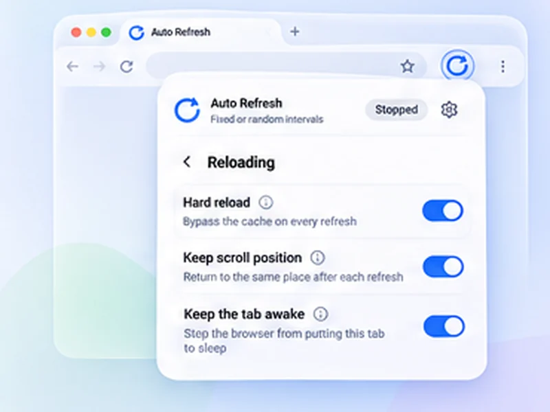

Reload the page. Keep your place.
Reading halfway down a long page? Turn on Keep scroll position and each refresh brings you back to the same spot.

How restore scroll position works
Reading halfway down a long page? Turn on Keep scroll position and each refresh brings you back to the same spot.
Pair it with a watch rule on a table or list further down the page. You see the row you care about every time, without scrolling back.
Quick setup
Open Advanced settings, Reloading.
Switch on Keep scroll position.
Scroll to the part you want to watch and press Start.
Refresh a page and stay in the same place
On a long page, every reload can throw you back to the top. With Keep scroll position on, the extension notes where you were just before the refresh and returns you there afterwards.
It restores the position again once the page has reached its full height, which matters for pages that add content as they load.
Made for long pages
- Tables and lists where the row you care about is far down.
- Live text commentary and score pages.
- Search results and listings you are part-way through.
- Documentation or a page you are building, alongside hard reload.
It gives way to you
If you scroll while the page is still loading, your movement wins and the saved position is dropped. Pair it with pause when you scroll to read without the page reloading under you.
A worked example: a long league table
You are following a team in 14th place on a page that reloads to the top. Scroll to the row, switch on Keep scroll position, and start a 30-second refresh. Each reload, the page briefly loads and then returns to 14th place without you touching anything.
How it decides where to return
Just before each reload the extension notes how far down and across the page you are. After the reload it scrolls there straight away, again when the page has finished loading, and once more a moment later for content that arrives late.
If the page is now shorter than before, you land as close as the new length allows.
Common mistakes
- Expecting it on endless feeds. Posts loaded by scrolling are not there after a reload.
- Scrolling during the reload. Your movement cancels the restore for that load.
- Leaving it off. It is off by default; turn it on under Reloading.
Best together with
Pause when you scroll, so reading is not interrupted, and a content change rule on the part of the page you are watching.
At a glance
- No more jumping to the top. The page returns to where you were, even on sites that normally reset the view.
- Handles late-loading pages. The position is restored again once the page has its full height, so long lists land correctly.
- Does not fight you. If you scroll during loading, your movement wins.
Questions, answered.
Why does my page jump to the top after a refresh?
Many sites reset the view on load. Turn on Keep scroll position to return to where you were.
Does it remember horizontal scrolling?
Yes, both directions.
Will it work on very long or lazy-loading pages?
It works for content present after the reload. Items that only load as you scroll may not be there to return to.
Is it on by default?
No. Switch it on under Advanced settings, Reloading.
Does it work with hard reload?
Yes. The two settings are independent.
Does it work on infinite-scroll pages?
Only for content that is present after the reload. Items that load as you scroll may not be there yet.
Try it on your next open tab.
Free for Chrome and Firefox, with no account required.
Not seeing the feature you need?
Share the browser task you would like to make easier. Your idea helps guide what gets built next.